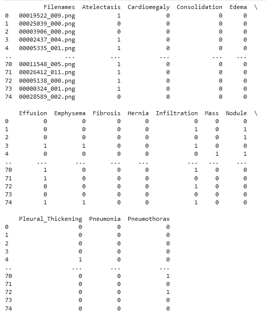
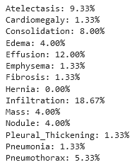
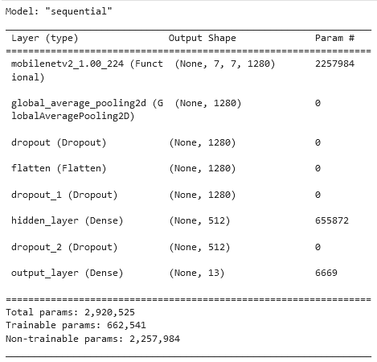
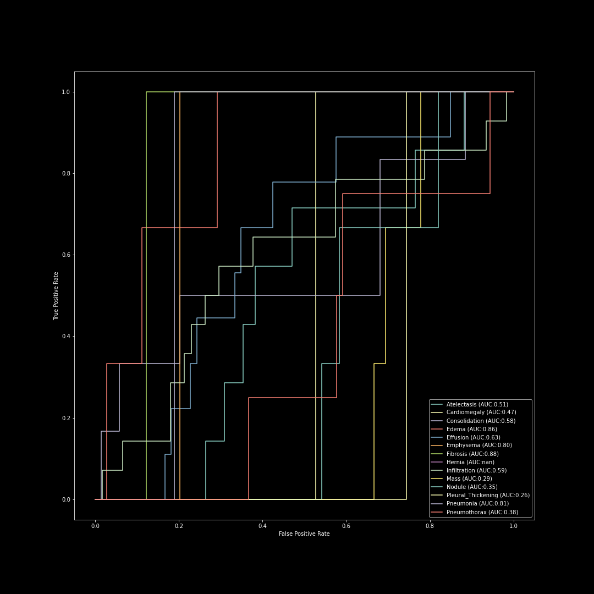

MACHINE PERFORMANCE
Algorithm Performance
The output from the machine is a series of lines denoting the image file name, followed by a series of categories. If the machine recognized a positive disease label in the respective category, it marked it with a "1". If no disease was spotted, the No Label category recevied a "1". For a better view of the image, click here.


The estimated distribution of various disease labels present in the original data set can be seen here.
Params utilized in training can be seen here.

Images of Performance
